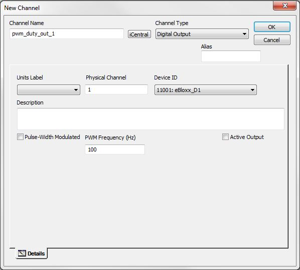
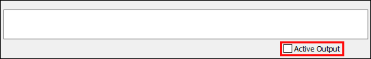
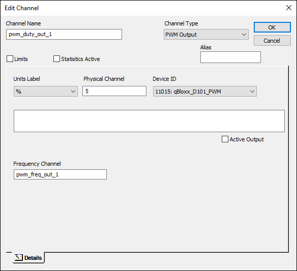
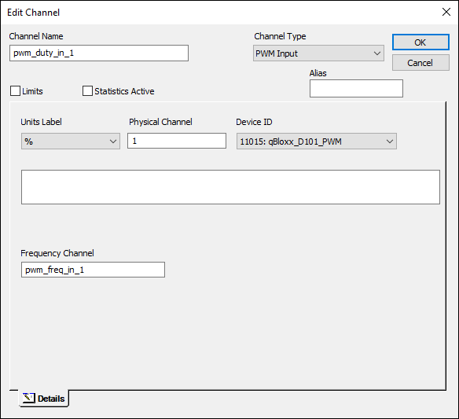
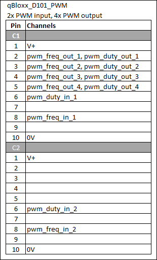

iTest User's Guide
PWM IO Support
Document Revision 3
Prepared By
ADT Software Engineering
A&D Confidential Document Distributable only to A&D Customers
Copyright A&D Company, Limited
A&D Technology Inc.
The functionality of the D1 e.bloxx module is dependent on the firmware loaded on it. This module is normally shipped with firmware functionality called FastChronos to support frequency, counter inputs, and digital inputs/outputs. To support PWM output operation, the ChronosPWM firmware must be loaded. This operation is done with the Test.Commander tool which can be found on the Gantner Instruments website.
When Digital Output is selected as the iTest channel type, the channel will control the duty cycle of the output if the Pulse-Width Modulated checkbox is checked. There will be a second edit box where the fixed frequency of the PWM is entered.
The Active Output setting is used to control the logic of the signal during the duty cycle. If the Active Output is checked, then the signal will be in an energized state during the duty cycle.
New Channel

A new device type qBloxx_D101_PWM has been introduced. When the QBloxx D101 is configured this way on PWM input and output are allowed on the module. PWM inputs will measure the duty cycle and frequency of a signal an place the measured values in to 2 iTest channels. PWM outputs use 2 iTest channels to control the duty cycle and frequency of a PWM output signal. Duty cycle ranges from 0 to 100 percent. Frequency from 0 to 10,000 Hertz.
New channel types of "PWM Input" and "PWM Ouput" are added to DATA.DEF. When the D101 is configured for PWM, Test Manager will allow PWM type channels to be configured.
The eGate driver is enhanced support PWM channels on the D101 module. The driver will generate PWM configurations and load them to the qBloxx controller.
The iTest Console Signal Bar and Channel control dialog now allow PWM outputs to be modified.
Each PWM input requires two inputs in the D101 module. One input is used to measure the frequency, the other to measure the duty cycle. The signal must be physically wired to both inputs.
PWM outputs are controlled by two variables in the D101 module: one for frequency and one for PWM percent. Pins 2 and 4 will be the physical outputs for the signal. The variables for pins 3 and 5 will be used as set point variables to control the frequency. The variables for pins 2 and 4 will control the duty cycle.
The Active Input or Active Output checkbox is used to indicate the percentage of time that the digital is energized within the frequency (duty cycle).
Active Output

For example, let's say you have a PWM signal with a 10Hz (100 ms) frequency and a duty cycle of 25%. This means that for every 100 ms, the signal will be logically "ON" for 25 ms then "OFF" for 75 ms. So if the Active Input or Active Output setting is checked, this means that the logical "ON" is energized during the duty cycle (in this case for 25 ms), and then de-energized for 75 ms. The unchecked setting is just the opposite.
While Active Output or Active Input usually represents the duty cycle (percent of time logically "ON"), it can also represent the frequency in some configurations.
A new device is introduced for PWM: qbloxx_D101_PWM. It will display a description of "2 PWM input, 4 PWM output".
PWM channels require a device of qbloxx_D101_PWM to be selected for Device ID. This will display PWM Input and PWM Output in the Channel Type list.
When PWM Output is selected, the channel will control the duty cycle of the output. There will be a second edit box where the frequency channel name is entered. When OK is pressed, two iTest channels are created. One will be a PWM Output channel to control duty cycle. The other will be a PWM Output channel to control frequency.
PWM Output

When PWM Input is selected, the channel will receive the duty cycle measurement. The second edit box will contain the name of another PWM Input channel that will receive the frequency measurement.
PWM Input

The Channel Definitions will display the PWM channels. Hardware Configuration will display qBloxx_D101_PWM. Device Options will show the name of the other channel in the pair of channels.
PWM Channels
